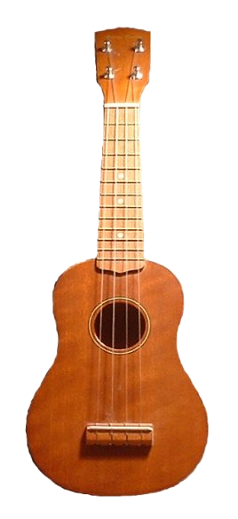
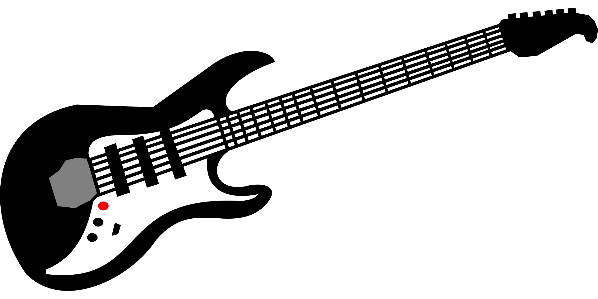

Ukulele
Eine Ukulele ist eine kleine Gitarre.
Sie hat 4 Nylon-oder Darmsaiten.
Die vierte Saite ist häufig höher oktaviert wie mittleren Saiten (Das heißt sie ist höher gestimmt)

Kollektives Schreiben, Public domain,
via Wikimedia Commons
Die Westerngitarre
Sie besitzt Stahlsaiten.
Sie ist meistens größer und lauter als Konzertgitarren.
Sie Wird häufig mit Plektrum gespielt
Da Sie einen Halsspannstab besitzt, ist der Hals stabiler
Sie Klingt laut und metallisch.
Neben jeder Saite ist eine 2.Saite.
Sie existiert in verschiedenen Bauformen.
Dreadnought:
ist die beliebteste Bauform.Jumbo
ist größer als Dreadnought, deshalb besitzt sie ennen bassigen Klang.Grand Auditorium
ist schmaler als Dreadnought und Jumbo für Fingerpicking geeignet
Die elektrische (E) Gitarre
Die elektrische (E) Gitarre ist elektrisch verstärkt Solidbody.
Sie hat viele verschiedene Bauarten.
Außerdem hat sie Stahlsaiten.
Da Sie einen Halsspannstab besitzt, ist der Hals stabiler
Sie hat kein Resonabzkörper(=Hohlraum) dafür kann sie über Tonabnehmer und Gitarrenverstärker verstärkt
werden.
Ohne Technik ist sie sehr leise.
Sie besitzt dünnere Saiten wie Westerngitarren.
Es gibt arten wie Telecaster,Les Paul und so weiter.
Eine besondere E-Gitarrenart ist die Hollowbody/halbakustische E-Gitarre.
Sie besitzt 2F-Löcher wie bei der Geige.
Der Korpus ist größtenteils hohl.
Die E-Gitarre ist Schmaler als akustische Gitarren.

Bild von Clker-Free-Vector-Images auf Pixabay
{kind=link}